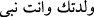
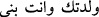
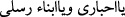

Allah’ın kudretinin mâ’dûmâta (o anda olmayanlara) “nasıl taalluk ettiğini kimse
bilemez.” Bu konuda susmak gerekir. Yine, Allah’ın zâtı, ölümden sonra azâbın nasıl
olacağı v.b. konularda da susmak gerekir. Zira bunlar derin ve muğlak konulardır.
Bu, insanların Allah’a oğul isnâd ederek ve Allah oğul edindi, diyerek dalâlete
düşmelerinin sebebi, önceki şerîatlerde Allah’a “Baba”, içlerinden en büyüklerine de
“İlah” demeleridir. Hatta onlar: “Baba küçük rabdir. Allah da büyük babadır” derlerdi.
Bununla insanın yaratılmasında Allah’ın ilk sebeb, babanın ise son sebeb olduğunu
anlatmak isterlerdi. Bir anlamda baba, çocuğun mâbûdudur. Daha sonra bir kısım
câhiller bunun “vilâdet-i tabîiyye”, (tabîî doğum) olduğunu zannettiler. Ve taklîd yoluyla
buna i’tikâd ettiler. Bu sebeble küfre düştüler. İster sebebiyyet yoluyla olduğu
kastedilsin, isterse vilâdet-i tabîiyye yoluyla olduğu kastedilsin, Allah hakkında bu tür
ifadelerin kullanılması câiz değildir. Zira her iki durumda da fesâd ve aldatma
kasdedilmektedir. Dost edinmeye gelince, bu Allah hakkında câizdir. Çünkü muhabbet,
sevenin cevherinden ayrı ve farklıdır.
Dediler ki: Allah, Îsâ (a.s.)’a: “Senin doğumuna vesîle oldum. Sen nebîsin” ( __WORD__ ) buyurdu. Hıristiyanlar bunu: “Seni doğurdum, sen benim oğlumsun.”
şeklinde değiştirdiler. ( __WORD__ ) Allah onların iddia ettikleri bu tür şeylerden
münezzehdir. Yine Allah: “Ey Yahûdî bilginleri ve Ey peygamberlerimin oğulları!” ( __WORD__ ) buyurdu. Yahûdîler bunu: “Ey dostlarım, ey oğullarım!” ( __WORD__ ) şeklinde değiştirdiler. “Velede” fiilindeki “lâm”ın şeddesini düşürdükleri gibi,
Peygamber anlamındaki “nebî” kelimesini oğul anlamında “benî” şekline soktular.
Allah da onları şu kavliyle yalanladı: “Yahûdîler ve hıristiyanlar: “Biz, Allah’ın
oğullarıyız ve sevgilileriyiz.” dediler. De ki: O halde niçin günahlarınızdan ötürü
Allah size azâb ediyor?” (el-Mâide, 5/18) Allah, sınır ve cihet gibi maddî şeylerden
münezzehdir. Eşler, oğullar ve kızlar edinmekten de çok çok yücedir. Ne yerde, ne de
gökte, O’nun bir benzeri yoktur. Rasûlullah (s.a.) Allah’ın şöyle buyurduğunu rivâyet
etti: “Âdemoğlu beni yalanladı” Yâni benim yalan söylediğimi iddiâ etti. “Oysa
yalanlamaması gerekirdi. Yine Âdemoğlu bana sövdü, oysa sövmemesi gerekirdi. Beni
yalanlaması, kendisini öldükten sonra tekrar diriltmeye güç yetiremeyeceğimi
zannetmesidir. Bana sövmesi ise bana oğul isnâd etmesidir. Hâşâ ben eş ve oğul
edinmekten münezzehim.”[366]
Allah’a oğul isnâd etmenin küfr diye nitelendirilmesi, doğum olayının bütünden bir
parçanın ayrılıp gelişmesi şeklinde olmasındandır. Böyle bir olay ancak mürekkep
cisimlerde olabilir. Her mürekkeb cisim de varlığında bir başkasına muhtaçtır. Oysa
Allah, muhtaç olmaktan münezzehdir. Bu nedenle onların bu isnâdları, Allah hakkında
çok ağır bir iftirâ olduğu için, “sövme” küfr diye isimlendirilmişti.
Onların, “Allah evlâd edindi.” sözleri de aynı zamanda yalandır. Zira Allah
kendisinin evlâd edinmediğini söylüyor. Yine onların: “Allah bizi öldükten sonra
diriltemez.” sözleri de aynı zamanda küfür”dür. Çünkü burada da Allah’a acz nisbet
etme vardır. Öyleyse: “Bunlardan birine “kizb” diğerine “küfür” denmesinin sebebi